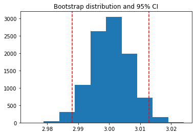
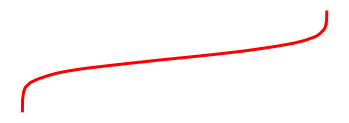

Contents
from myst_nb import glue
my_variable = "here is some text!"
glue("cool_text", my_variable)
'here is some text!'
# Simulate some data and bootstrap the mean of the data
import numpy as np
import pandas as pd
import matplotlib.pyplot as plt
n_points = 10000
n_boots = 1000
mean, sd = (3, .2)
data = sd*np.random.randn(n_points) + mean
bootstrap_indices = np.random.randint(0, n_points, n_points*n_boots).reshape((n_boots, n_points))
# Calculate the mean of a bunch of random samples
means = data[bootstrap_indices].mean(0)
# Calculate the 95% confidence interval for the mean
clo, chi = np.percentile(means, [2.5, 97.5])
# Store the values in our notebook
glue("boot_mean", means.mean())
glue("boot_clo", clo)
glue("boot_chi", chi)
3.0004730662495986
2.9880314118846467
3.0127996149037366
# Visualize the historgram with the intervals
fig, ax = plt.subplots()
ax.hist(means)
for ln in [clo, chi]:
ax.axvline(ln, ls='--', c='r')
ax.set_title("Bootstrap distribution and 95% CI")
# And a wider figure to show a timeseries
fig2, ax = plt.subplots(figsize=(6, 2))
ax.plot(np.sort(means), lw=3, c='r')
ax.set_axis_off()
glue("boot_fig", fig, display=False)



In-line text; 3.0004730662495986, and a figure: .
```{glue:figure} boot_fig
:figwidth: 300px
:name: "fig-boot"
This is a **caption**, with an embedded `{glue:text}` element: {glue:text}`boot_mean:.2f`!
```
File "C:\Users\Jim\AppData\Local\Temp\ipykernel_179432\299355072.py", line 1
```{glue:figure} boot_fig
^
SyntaxError: invalid syntax